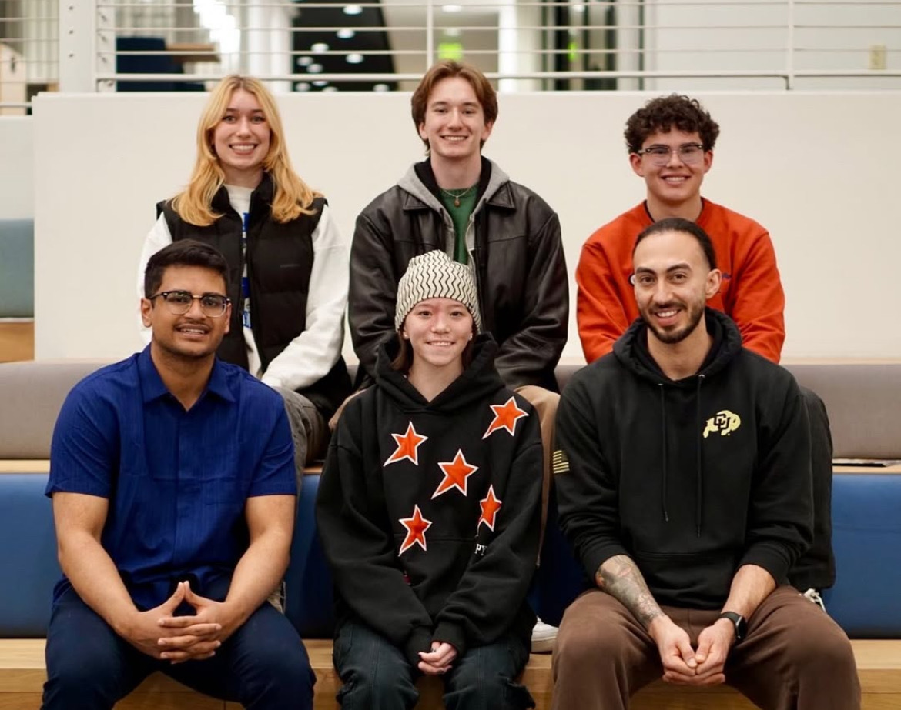
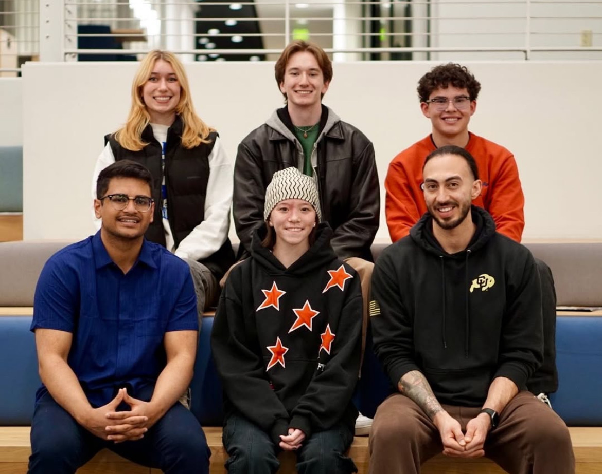
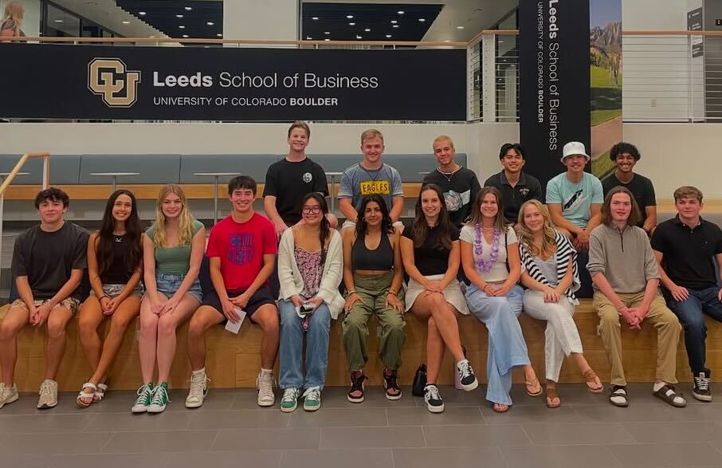
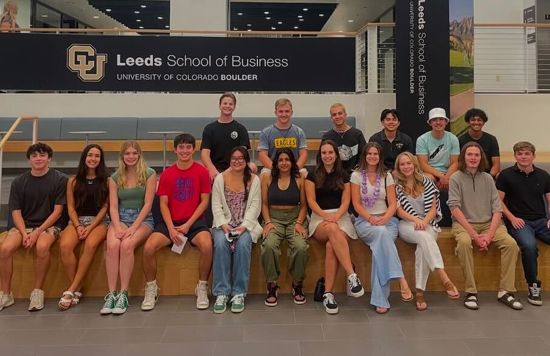

Use the arrow keys to move the spaceship and explore the (brief) history of Kappa Theta Pi Nu Chapter!


Welcome to the beginning of KTP Nu Chapter! In our first semester, we laid the foundation for our chapter, bringing together a group of passionate and driven individuals. We held our first recruitment events, took in our first pledge class, established our core values, and began building a strong sense of community. This semester was all about setting the stage for future growth and success.


 

In our second semester, we hit the ground running! We expanded our membership, hosted our first major events, and had our first guest speaker, Bart Foster. This semester was marked by growth, learning, and the beginning of our journey to make a lasting impact on our community. We also held our first professional development workshops, helping members grow both personally and professionally.


 

By our third semester, KTP Nu Chapter was thriving! Our dedicated marketing effort enabled us to double in size, while we also organized large-scale events, strengthened our alumni network, and began making a name for ourselves on campus. This was paired with a lively social scene for members which culminated in an exciting formal in Winter Park, CO. We also celebrated our first anniversary, reflecting on how far we had come and setting ambitious goals for the future.
Now in our fourth semester, KTP Nu Chapter is stronger than ever! We continue to innovate, hosting new events and initiatives that push the boundaries of what a student organization can achieve. This semester is about growth, leadership, and preparing for the future. As we look ahead, we're excited to see how our chapter will continue to evolve and make a difference in the years to come.